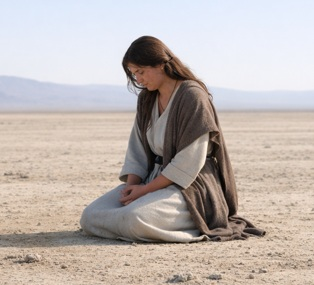

This page presents an explanation of a textual and interpretive problem in Revelation 12. The traditional English rendering of the passage introduces a “war in heaven” and a set of theological assumptions that do not appear in the Greek text. The conflict described in the chapter is not a military event but a hermeneutical dispute arising from a mistranslated verb.
The standard English translation states that the woman “gave birth to a son who would rule the nations with an iron rod.” The Greek, however, does not speak of ruling or political dominion. The verb used is ποιμαίνειν (poimainein), which means “to shepherd” — to guide, to tend, to care for, not to dominate — and the noun translated as “nations” is τὰ ἔθνη (ta ethnē), meaning “the peoples,” not modern nation‑states.
So the Greek text is unequivocal: she would give birth to a son who would shepherd and guide the people, not rule the world.
This mistranslation introduced an interpretive framework in which the child is understood as a future ruler wielding coercive authority. Entire doctrinal systems were subsequently built on this assumption, despite its absence from the Greek text.
One of the most consequential doctrinal developments arising from the mistranslation is the idea that the woman in the wilderness represents a “new Eve” for a new creation. This interpretation depends entirely on the assumption that her child is a ruler whose birth initiates a new cosmic order.
Nothing in the Greek text supports this conclusion. The “new Eve” reading is a secondary construct built on the mistranslated verb. Once the verb is corrected, the interpretive foundation for this alternate reading disappears. The woman is not portrayed as a progenitor of a new world, nor does her role parallel Eve in Genesis.
The Greek term polemos is frequently translated as “war,” but in this context it refers to a dispute — a conflict of interpretation and intent rather than a physical battle. The mistranslated verb generated two erroneous theological positions:
Both positions are reactions to the mistranslation, not to the Greek text itself. The dispute in heaven is therefore a semantic conflict, not a cosmological battle.
Both positions are reactions to the mistranslation, not to the Greek text itself. The dispute in heaven is therefore a semantic conflict, not a cosmological battle — and it ultimately became a Rorschach test revealing the soul’s final posture.
The Greek text describes the woman as being taken to the erēmos, a term meaning solitary, isolated, and protected. As the excerpt states, “She is taken to be completely alone – the word is eremos, meaning solitary, isolated.”
Her removal to this location indicates that she is absent from the narrative world in which the dispute occurs. She does not participate in the conflict, nor does her movement into the wilderness initiate it. The English translation’s sequencing creates a causal relationship that the Greek text does not support.
When the mistranslation is corrected, the structure of Revelation 12 becomes coherent. The woman’s isolation and protection form one scene; the dispute over the child’s role forms another. The Greek text places these scenes adjacent to one another without implying causation.
Correcting the verb also removes the interpretive scaffolding that produced the “new Eve” reading and the false doctrinal choices associated with it. The narrative can then be understood within its original symbolic framework, without the distortions introduced by the incorrect translation.
The closing lines of Malachi establish a direct ultimatum: Elijah will stand as a refiner of silver — or God will strike the world. The Hebrew term הָאָרֶץ (ha’aretz) refers not merely to “land” but to the inhabited world-order, the human domain under covenant.
John the Baptist is identified as Elijah, yet his refinement mission was cut short, and during the time of Jesus he neither stood as the refiner nor recognized his own role. Because the refinement was not completed in their era, the Malachi ultimatum remains open within the textual structure.
Revelation 12 continues this unresolved mandate. The “woman in the wilderness” marks the delay, and the “manchild” represents the resumption of the refinement that Malachi required. In this reading, Revelation does not add a new prophecy; it carries forward the same ultimatum until the refinement is fulfilled.
Malachi’s ultimatum is explicit: Elijah must stand as a refiner of silver, or הָאָרֶץ (ha’aretz) — the inhabited world‑order — will be utterly destroyed; and in the apocalyptic framework, the period of “time, times, and half a time” functions as the deadline for this ultimatum.
© 2026 Raphael Asanti · Main site